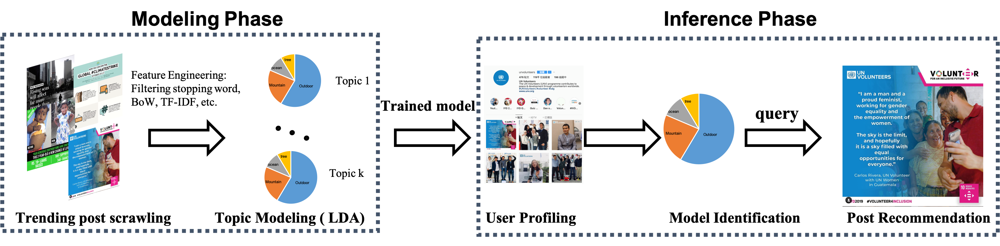
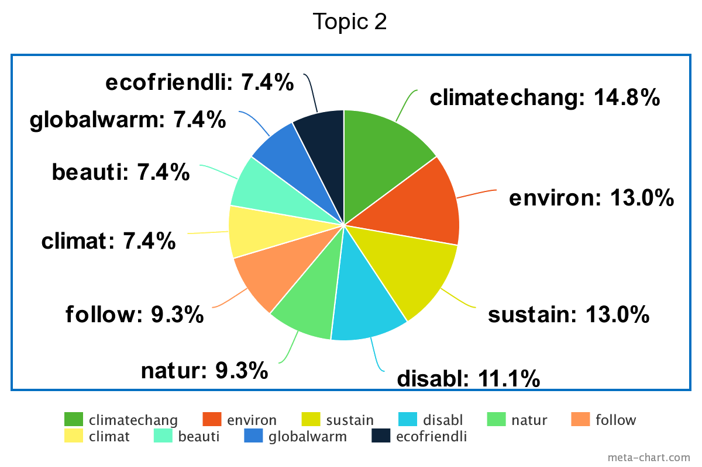
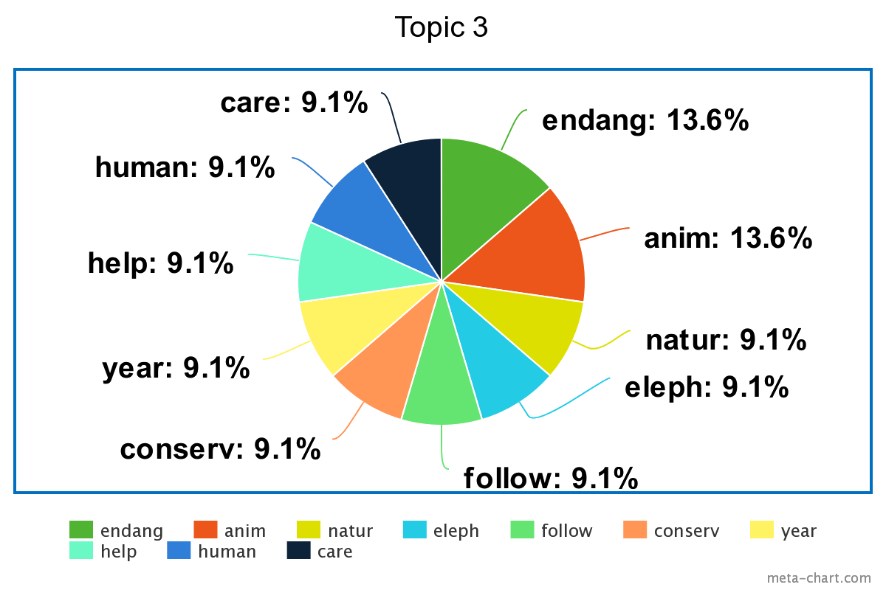

Good2Know: Instagram Social Good Trending Post Recommender
Jeff Chang, Yi-Min Chou, Chun-Jung Chien, Ting-Kuei Hu
Github Website
Motivation
As a member of a society with exploding information around, people mostly pay attention to things around themselves but rather than things that benefit the society in the long run, such as supporting LGBT community, protecting environments or caring wars in the third-party world.
Our program aims to benefit the whole society by diffusing socially good posts to raise people’s attention as much as possible. To be more specific, we attempt to recommend the meaningful posts to social media users so that they can have impacts on the base of their own community circle.
Approch
1. Data cleaning and filtering: Obtain the trending post in the most recent time based on post time, numbers of comments or likes.
2. Topic Modeling: Apply LDA on trending posts to discover particular topics and label which topic is social good related. Remove the documents with less social good related information, and get the social good posts feature vector from LDA algorithm.
3. Recommendation: For each user, we first do user profiling based on their posts, and use a similarity algorithm to find out the close posts in feature space and generate recommendations based on this closeness.
LDA Visualization

Demo
Conclusion
1. We propose a social good recommender system to arouse people’s attention things that benefit the society.
2. Our recommender system successfully forwards meaningful posts to social media users so that they can have social-good impacts on the base of their own community circle.